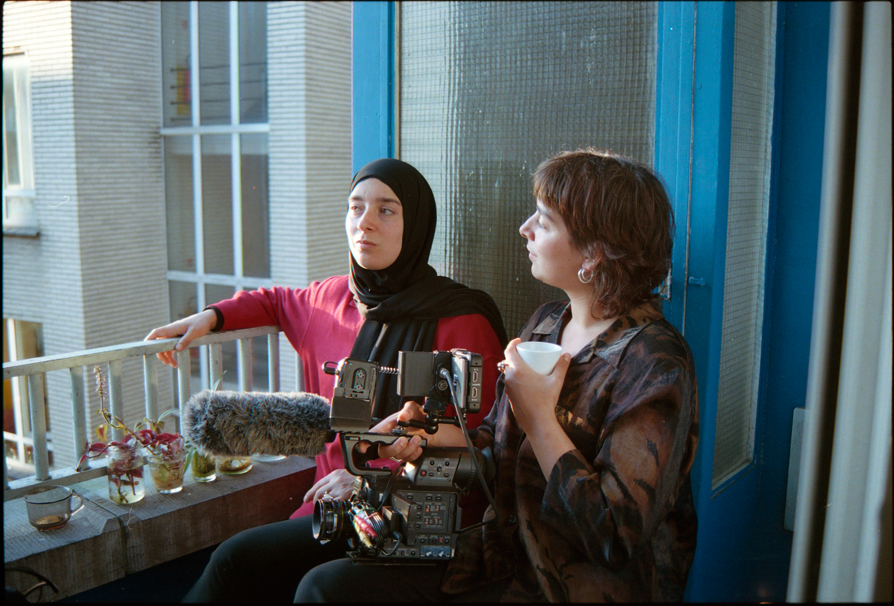

Ana + Yek
Ana + Yek (Me + You) follows twin sisters Sanaa and Zohra. What begins as Zohra' exploration of their Moroccan heritage gradually reveals the shifting dynamics of their relationship, as Sanaa's deepening love for Islam becomes more apparent. The film unfolds as a journey of mutual understanding — a cinematic dialogue fueled by their desire to connect. An intimate portrait of sisterly love and independence.

a documentary film by: Zohra Benhammou & Romy Mana edited by: Febe Simoens sound by: Sabrina Calmels & Aline Gavroy produced by: Elisa Heene distributed by: Screenbox in cooperation with: Cinemaximiliaan Belgian release with: the support of Darna
Rupture
Rupture follows a group of young adults from Brussels as they embark on a transformative journey to the Spanish Pyrenees. Their adventure leads to profound reflections on life, identity, and the challenges of their migratory background.
a documentary by Zohra Benhammou & Younes Haidar edited by Younes Haidar & Sébastien Calvez sound by Eric Verheyden produced by Eveline Welschen, BRUZZ distributed by Bevrijdingsfilms vzw
Festivals selections
Docville Leuven, 2024
FIDADOC festival International de documentaire d'Agadir, 2024
Festival International du Cinéma de Montagne d'Ouzoud, 2024
Filem'On Film Festival for Young Audiences, Bruxelles, 2024
Docfest Brugge, 2024